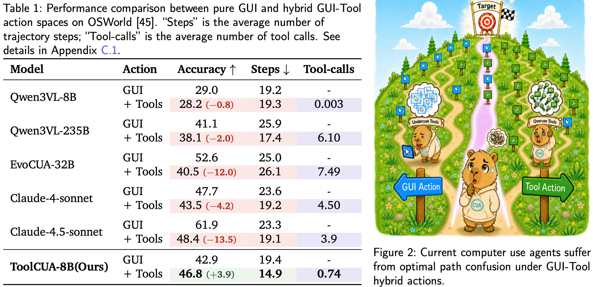
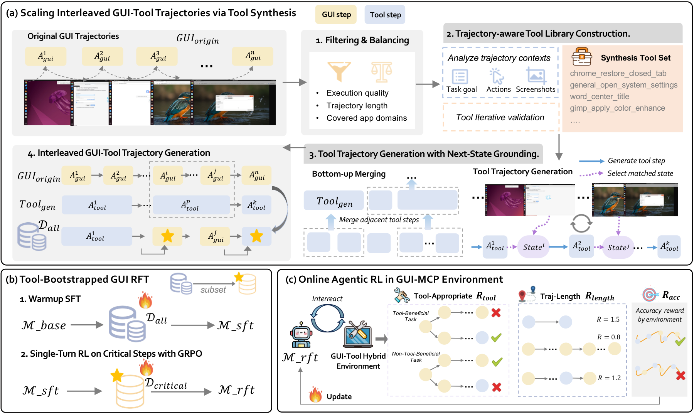
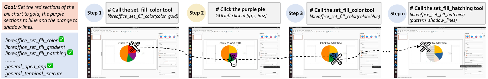
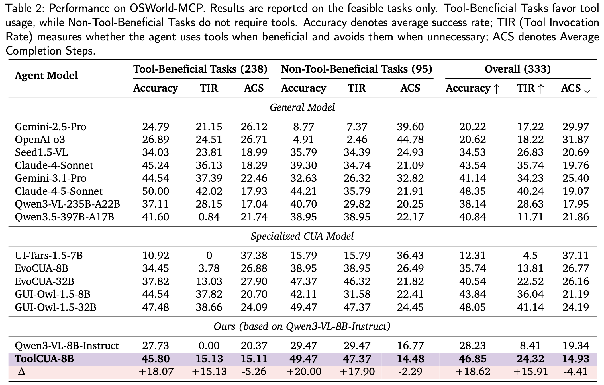
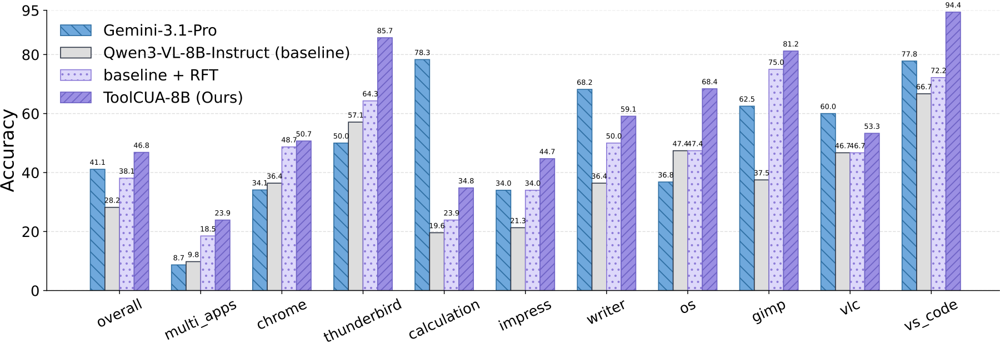
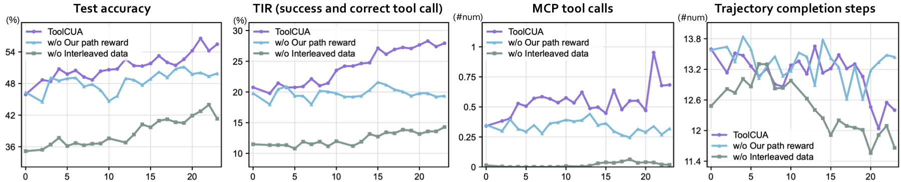
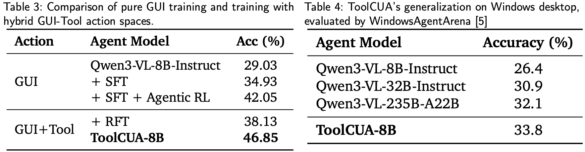

Computer Use Agents (CUAs) are moving from text-only interaction toward real desktop operation, where agents must coordinate atomic GUI actions and high-level tool calls. However, simply exposing an agent to both action spaces does not make it reliable. In hybrid GUI-Tool environments, agents must learn when to continue through visual GUI grounding, when to invoke structured tools, and when tool calls may actually hurt task success.
We introduce ToolCUA, an end-to-end CUA designed for optimal GUI-Tool path selection. ToolCUA scales interleaved GUI-Tool trajectories from existing GUI-only data, applies Tool-Bootstrapped GUI RFT to acquire tool knowledge and calibrate local switching behavior, and further optimizes full task trajectories with Online Agentic RL using a Tool-Efficient Path Reward.
On OSWorld-MCP, ToolCUA-8B achieves 46.85% accuracy, a relative improvement of about 66% over Qwen3-VL-8B-Instruct, while reaching the lowest average completion steps among compared models at 14.93.
Giving CUAs both GUI actions and tool calls does not automatically make them better. Our diagnostic study exposes a direct path selection confusion problem under hybrid actions: some models stay GUI-centric and almost never call tools, while stronger models may overuse tools, shorten trajectories, and still lose task success.

Qwen3-VL-8B barely invokes tools after they are introduced, with only 0.003 tool calls per trajectory and an accuracy drop from 29.0% to 28.2%. Qwen3-VL-235B calls tools much more frequently, reducing average steps from 25.9 to 17.4, but accuracy still drops from 41.1% to 38.1%. The core bottleneck is therefore whether the agent can choose the right GUI-Tool path at each state.

Interleaved GUI-Tool Trajectory Scaling. ToolCUA starts from existing GUI-only trajectories and uses MLLMs to synthesize trajectory-aware grounded tools. It then generates tool trajectories with next-state grounding and constructs diverse interleaved GUI-Tool trajectories by replacing suitable GUI subsequences with tool calls.
Tool-Bootstrapped GUI RFT. Warmup SFT teaches tool schemas, arguments, responses, and GUI state transitions. Single-turn RL on critical switching steps further calibrates local GUI-versus-Tool decisions, so the model learns when a tool is appropriate in context.
Online Agentic RL. ToolCUA then performs long-horizon rollout in GUI-Tool environments. Its Tool-Efficient Path Reward combines task success, format validity, tool appropriateness, and path efficiency, encouraging agents to use tools when helpful, avoid them when unnecessary, and complete successful tasks in fewer steps.
High-quality GUI-Tool trajectories are scarce because real tools are application-specific, costly to build, and hard to maintain. ToolCUA repurposes GUI-only demonstrations into hybrid supervision, enabling the model to learn not only how to call tools, but also where tools should replace, complement, or defer to GUI operations.

ToolCUA is evaluated on OSWorld-MCP, which extends OSWorld with GUI actions and 150+ MCP tools across realistic desktop applications. We report Accuracy, Tool Invocation Rate (TIR), and Average Completion Steps (ACS) over 333 feasible tasks.
| Agent Model | Accuracy ↑ | TIR ↑ | ACS ↓ |
|---|---|---|---|
| Claude-4-Sonnet | 43.54 | 35.74 | 19.76 |
| Gemini-3.1-Pro | 41.14 | 34.23 | 25.40 |
| Claude-4.5-Sonnet | 48.35 | 40.24 | 19.07 |
| GUI-Owl-1.5-8B | 43.84 | 36.04 | 21.19 |
| GUI-Owl-1.5-32B | 48.05 | 41.14 | 24.19 |
| Qwen3-VL-8B-Instruct | 28.23 | 8.41 | 19.34 |
| ToolCUA-8B | 46.85 | 24.32 | 14.93 |

Compared with Qwen3-VL-8B-Instruct, ToolCUA improves overall accuracy by +18.62 points, raises TIR from 8.41 to 24.32, and reduces ACS from 19.34 to 14.93. This shows that ToolCUA learns selective tool usage rather than simply increasing tool calls.
ToolCUA demonstrates strong generalization beyond the training distribution. Although online agentic RL is conducted only on single-application Linux tasks and excludes the multi_apps category, ToolCUA improves on the held-out multi_apps domain from the baseline 9.8% and the pre-online-RL stage 18.5% to 23.9%. It also achieves consistent gains across specialized domains, including libreoffice_calculation and vs_code.
Beyond cross-task transfer, ToolCUA further generalizes to unseen Windows desktop environments. Despite being trained on Linux-based trajectories and sandboxes, ToolCUA reaches 33.8% accuracy on WindowsAgentArena, outperforming the Qwen3-VL-8B-Instruct baseline by 7.4 percentage points and surpassing larger Qwen3-VL variants.

The Importance of Interleaved GUI-Tool Trajectory Data. Removing coldstart RFT with synthetic interleaved GUI-Tool data and directly applying online agentic RL still improves task accuracy, but the model struggles to acquire reliable tool-calling behavior. Its TIR remains consistently low and tool calls stay close to zero throughout most of training, showing that online RL with tool-efficiency rewards alone is insufficient to overcome the GUI-centric bias of base models.
Advantages of Tool-Efficient Path Reward. Replacing our path reward with vanilla multi-turn GRPO makes the accuracy curve less stable, produces a clear drop around steps 8--11, and leaves an eventual gap of about 7 percentage points after 20 training steps. TIR and tool calls fluctuate without a consistent upward trend, while trajectory length lacks a stable downward trend, validating that the Tool-Efficient Path Reward is essential for tool-appropriate and efficiency-aware path selection.

Hybrid GUI-Tool Training is More Effective than Pure GUI. A pure GUI pipeline improves the baseline from 29.03% to 34.93% after SFT and 42.05% after agentic RL, but both stages remain below their GUI-Tool counterparts. RFT training with synthetic interleaved GUI-Tool trajectories already reaches 38.13%, and full ToolCUA further improves to 46.85%, indicating that hybrid action spaces provide a more effective training environment for learning when structured tool calls can replace redundant low-level GUI operations.

Click a case and a trajectory step to inspect the agent action, tool response, and post-execution desktop state.
@article{hu2026toolcua,
title={ToolCUA: Towards Optimal GUI-Tool Path Orchestration for Computer Use Agents},
author={Hu, Xuhao and Zhang, Xi and Xu, Haiyang and Qiao, Kyle and Yang, Jingyi and Huang, Xuanjing and Shao, Jing and Yan, Ming and Ye, Jieping},
journal={arXiv preprint arXiv:2605.12481},
year={2026}
} ToolCUA: Towards Optimal GUI-Tool Path Orchestration for Computer Use Agents
ToolCUA: Towards Optimal GUI-Tool Path Orchestration for Computer Use Agents